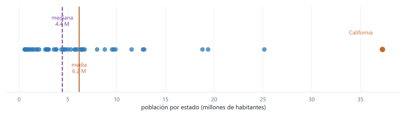
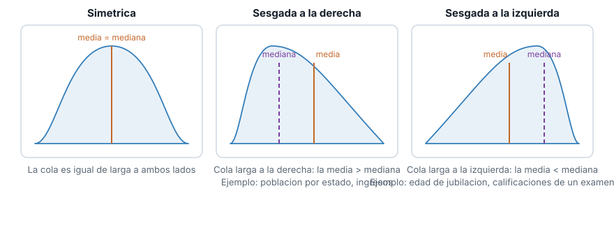
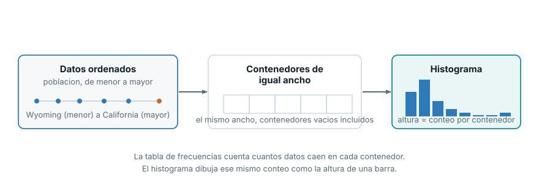
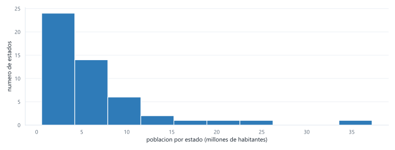
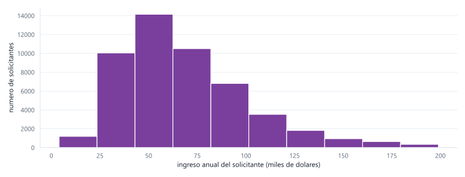

Semana 3. Tablas de frecuencia, histogramas y medidas de localización y dispersión
| Módulo | Estadística para Analítica |
| Programa | Especialización en Big Data |
| Unidad | Unidad 1. Análisis descriptivo y exploratorio de datos |
Abrir la presentación de la sesión
1 De qué va esta semana
Esta guía sigue el capítulo 1 de Estadística práctica para ciencia de datos con R y Python (Bruce, Bruce y Gedeck, 2.ª edición), que es la fuente que seguimos esta semana. Vamos a repetir, con Python, los mismos cálculos que hace el libro, con la misma formalidad: cada medida trae su fórmula, un ejemplo resuelto, y un recuadro de interpretación en contexto que explica, en lenguaje llano y con el ejemplo concreto del dataset, qué significa ese número más allá de la definición matemática.
El dataset guía es state.csv, del propio repositorio del libro: población y tasa de homicidios de los 50 estados de EE. UU. según el censo de 2010. Es pequeño, real y ya publicado, lo que te deja verificar cada resultado contra un libro de referencia mientras aprendes el método. No vas a quedarte solo mirando cómo lo resuelvo yo: cada bloque conceptual trae un ejercicio para que lo resuelvas tú sobre una segunda columna del mismo dataset (Murder.Rate), con una solución que puedes revisar después de intentarlo. Después, aplicas todo el método completo, de principio a fin, sobre un dataset distinto y mucho más grande: 50 000 ingresos de solicitantes de crédito (loans_income.csv, también del libro). Y para cerrar, un ejercicio sin solución ni dataset dado: tú buscas los datos, formulas las preguntas y justificas cada respuesta.
La pregunta que resuelve esta semana es la que aparece cada vez que alguien te entrega una columna de números: ¿cuál es el valor típico de esta variable, y qué tan dispersos están los datos alrededor de ese valor? La media sola no basta. Vas a calcular varias formas de resumir la localización y la dispersión, ver cuándo cada una conviene y por qué, y terminar resumiendo una variable completa en una tabla de frecuencias y un histograma.
Al terminar deberías poder:
- Calcular e interpretar media, mediana y media truncada a partir de su fórmula, y explicar por qué pueden diferir en un mismo conjunto de datos.
- Calcular media y mediana ponderadas cuando cada observación no debería pesar lo mismo.
- Calcular e interpretar varianza, desviación estándar, rango intercuartílico (IQR), desviación absoluta mediana (MAD) y coeficiente de variación, y decidir cuál reportar según si la variable tiene valores atípicos.
- Construir una tabla de frecuencias con contenedores de igual ancho y su histograma correspondiente, e interpretar la forma de la distribución que resulta (simétrica o sesgada).
- Aplicar el método completo a un conjunto de datos nuevo, formular tus propias preguntas sobre él, y justificar por escrito por qué cada medida que elegiste es la que corresponde.
2 Cargar el dataset del libro
state.csv está publicado en el repositorio de datos del libro. No hace falta descargarlo: pandas puede leerlo directo desde la URL cruda de GitHub.
import pandas as pd
url = "https://raw.githubusercontent.com/gedeck/practical-statistics-for-data-scientists/master/data/state.csv"
state = pd.read_csv(url)
print(state.head(8))
print(state.dtypes) State Population Murder.Rate Abbreviation
0 Alabama 4779736 5.7 AL
1 Alaska 710231 5.6 AK
2 Arizona 6392017 4.7 AZ
3 Arkansas 2915918 5.6 AR
4 California 37253956 4.4 CA
5 Colorado 5029196 2.8 CO
6 Connecticut 3574097 2.4 CT
7 Delaware 897934 5.8 DE
State object
Population int64
Murder.Rate float64
Abbreviation object
dtype: objectCuatro columnas: el nombre del estado y su abreviatura son categóricas nominales, sin orden natural (la clasificación de la semana 02). Population y Murder.Rate son numéricas: Population se cuenta (número de habitantes), y Murder.Rate se mide, en homicidios por cada 100 000 habitantes por año. El dataset completo tiene 50 filas, una por estado. Vas a trabajar Population conmigo, paso a paso, y vas a resolver los mismos pasos con Murder.Rate por tu cuenta.
3 Estimación de la localización
La localización responde una pregunta simple: si tuvieras que resumir toda la columna en un solo número, ¿cuál dirías? Hay más de una respuesta razonable, y esta sección construye tres, con su fórmula, antes de comparar cuál conviene según el caso.
La media
La media (o promedio) suma todos los valores y divide entre cuántos son:
\[ \bar{x} = \frac{\sum_{i=1}^{n} x_i}{n} \]
donde \(x_1, x_2, \ldots, x_n\) son los \(n\) valores de la variable. Es la estimación de localización más simple y la más usada, y por eso vale la pena entender exactamente cuándo falla.
La mediana
La mediana ordena los \(n\) valores de menor a mayor y toma el valor central. Si \(n\) es impar, es el valor en la posición \(\frac{n+1}{2}\). Si \(n\) es par (como en state.csv, con 50 filas), es el promedio de los dos valores centrales, en las posiciones \(\frac{n}{2}\) y \(\frac{n}{2}+1\). A diferencia de la media, la mediana no usa el valor de cada dato, solo su posición en el orden.
La media truncada
La media truncada ordena los valores, descarta un número fijo \(p\) de observaciones en cada extremo, y promedia lo que queda:
\[ \bar{x}_{\text{tr}} = \frac{\sum_{i=p+1}^{n-p} x_{(i)}}{n - 2p} \]
donde \(x_{(1)}, x_{(2)}, \ldots, x_{(n)}\) son los valores ordenados de menor a mayor. Con trim=0.1 (10%) sobre 50 estados, \(p = 5\): se descartan los 5 estados más pequeños y los 5 más grandes, y se promedian los 40 restantes.
Las tres, calculadas sobre Population
from scipy.stats import trim_mean
media = state["Population"].mean()
media_truncada = trim_mean(state["Population"], 0.1)
mediana = state["Population"].median()
print("media:", media)
print("media truncada (10%):", media_truncada)
print("mediana:", mediana)media: 6162876.3
media truncada (10%): 4783697.125
mediana: 4436369.5Las tres estimaciones dan resultados distintos, y la diferencia no es ruido: tiene una causa concreta. La mediana ordena las 50 poblaciones y toma el valor central. No le importa si el estado más grande tiene 6 millones de habitantes o 40 millones: solo le importa su posición en el orden. La media, en cambio, suma los 50 valores, y California pesa en esa suma con sus 37 253 956 habitantes tanto como pesan juntos varios de los estados más pequeños. Ese único estado empuja la media muy por encima de la mediana: la diferencia entre las dos, 6 162 876 contra 4 436 370, es casi 1.73 millones de habitantes, más grande que la población de 12 de los 50 estados.
La media truncada, al descartar los 5 estados más grandes (entre ellos California) y los 5 más pequeños, queda mucho más cerca de la mediana (4.78 millones) que de la media (6.16 millones): es un punto intermedio, que elimina la influencia de los extremos sin llegar a ignorar por completo cuánto pesa cada estado, como sí hace la mediana.
- Media (6.16 millones). Es la cifra que resultaría si repartieras la población total del país en partes exactamente iguales entre los 50 estados. Nadie tiene esa población: es un promedio matemático, no el tamaño de ningún estado real. Sirve para cálculos que necesitan el total (la población total del país es la media por 50), pero engaña si la usas para describir “cómo es un estado típico”.
- Mediana (4.44 millones). Es la población del estado que queda justo en el medio si alinearas los 50 estados de menor a mayor. La mitad de los estados tiene menos población que eso, y la otra mitad tiene más. Es la mejor respuesta a “¿cómo es un estado típico?”, porque no le importa si California tiene 6 millones o 60 millones más que el resto: sigue estando igual de lejos, en la misma posición del orden.
- Media truncada (4.78 millones). Es como el promedio de una competencia de clavados, donde se descartan la nota más alta y la más baja de los jueces antes de promediar, para que un juez sesgado no manipule el resultado: aquí se descartan los 5 estados más chicos y los 5 más grandes antes de promediar los 40 restantes.

Cuando una variable no tiene valores extremos, media y mediana casi coinciden. Cuando sí los tiene (y Population es un buen ejemplo: hay un salto grande entre la mayoría de los estados y los pocos muy poblados), la mediana y la media truncada quedan más cerca del valor que describiría mejor a un estado “típico”, y la media queda jalada hacia el valor atípico. Esa propiedad, no dejarse mover por unos pocos valores extremos, se llama robustez. La mediana y la media truncada son robustas; la media, no.

Esta relación entre media y mediana no es exclusiva de Population: es una regla general que vas a usar en cada dataset nuevo que abras. Cuando la cola de la distribución se estira hacia valores altos (sesgo a la derecha, como la población o casi cualquier variable de dinero: ingresos, precios, ventas), la media queda por encima de la mediana. Cuando se estira hacia valores bajos (sesgo a la izquierda, menos común: edad de jubilación, calificaciones de un examen fácil donde casi todos sacan buena nota y pocos sacan mala), la media queda por debajo. Cuando no hay cola dominante, coinciden. Antes de reportar un solo número, mirar si media y mediana coinciden te dice, sin necesidad de graficar nada todavía, si la variable tiene sesgo.
Murder.Rate
Calcula la media, la mediana y la media truncada al 10% de Murder.Rate, la tasa de homicidios por cada 100 000 habitantes. Antes de correr el código, escribe una hipótesis: ¿esperas que la media quede muy por encima de la mediana, como pasó con Population, o más cerca? Justifica tu respuesta pensando en si Murder.Rate tiene un valor tan extremo como California.
Después de calcular las tres, responde: ¿qué estado tiene la tasa más alta? ¿Cambia tu conclusión sobre el sesgo de la distribución?
media_mr = state["Murder.Rate"].mean()
mediana_mr = state["Murder.Rate"].median()
truncada_mr = trim_mean(state["Murder.Rate"], 0.1)
print("media:", media_mr)
print("mediana:", mediana_mr)
print("media truncada (10%):", truncada_mr)media: 4.066
mediana: 4.0
media truncada (10%): 3.9450000000000003Las tres estimaciones quedan mucho más cerca entre sí que en Population (4.07, 4.0 y 3.95, contra 6.16, 4.44 y 4.78 millones). Murder.Rate sí tiene sesgo a la derecha (la media queda un poco por encima de la mediana), pero mucho más leve: no hay un estado tan extremo, en proporción al resto, como California lo es para la población. El máximo de Murder.Rate es 10.3 (Louisiana), apenas 2.5 veces la media, mientras que la población de California es más de 6 veces la media de Population. Conclusión: una diferencia pequeña entre media y mediana es la señal de que ningún valor extremo domina el resultado, y en ese caso cualquiera de las tres estimaciones sirve para reportar el valor típico.
Media y mediana ponderadas
Murder.Rate trae otra pregunta. Si promedias esa columna sin más, tratas la tasa de Wyoming (con menos de 600 000 habitantes) exactamente igual que la de California (con más de 37 millones), y sin embargo un homicidio en California pesa sobre una población muchísimo mayor. Cuando cada observación representa una masa distinta, conviene ponderar: multiplicar cada valor por su peso antes de promediar.
\[ \bar{x}_w = \frac{\sum_{i=1}^{n} w_i x_i}{\sum_{i=1}^{n} w_i} \]
donde \(w_i\) es el peso de la observación \(i\) (aquí, la población del estado \(i\)). La mediana ponderada sigue la misma idea pero sobre las posiciones: es el valor tal que la mitad de la suma de los pesos queda por encima y la otra mitad por debajo, en la lista ordenada.
import numpy as np
import wquantiles
print("media simple de Murder.Rate:", state["Murder.Rate"].mean())
print("mediana simple de Murder.Rate:", state["Murder.Rate"].median())
media_ponderada = np.average(state["Murder.Rate"], weights=state["Population"])
mediana_ponderada = wquantiles.median(state["Murder.Rate"], weights=state["Population"])
print("media ponderada por poblacion:", media_ponderada)
print("mediana ponderada por poblacion:", mediana_ponderada)media simple de Murder.Rate: 4.066
mediana simple de Murder.Rate: 4.0
media ponderada por poblacion: 4.445833981123393
mediana ponderada por poblacion: 4.4np.average con el argumento weights calcula la media ponderada directamente. Para la mediana ponderada no hay una función en la librería estándar de NumPy o pandas; el paquete wquantiles (se instala con pip install wquantiles) la resuelve. La tasa ponderada sube de 4.07 a 4.45: los estados más poblados de esta muestra tienden a tener una tasa de homicidios un poco más alta que el promedio simple, y ponderar por población lo refleja.
Caso de uso. Si un analista de política pública preguntara “¿cuál es la tasa de homicidios promedio en el país?”, la respuesta correcta no es el promedio simple de las 50 tasas estatales: es la tasa ponderada, porque refleja cuántas personas viven realmente bajo cada tasa. El promedio simple le da a Wyoming (menos de 600 000 habitantes) el mismo peso que a California (más de 37 millones), y eso distorsiona cualquier conclusión sobre el país como conjunto.
Piensa en la diferencia entre estas dos preguntas: “¿cuál es la tasa de homicidios promedio entre los 50 estados?” (la respuesta es 4.07, el promedio simple, donde cada estado cuenta como una unidad) y “¿cuál es la tasa de homicidios que en promedio vive una persona del país?” (la respuesta es 4.45, el promedio ponderado, donde cada persona cuenta como una unidad). La primera pregunta trata a Wyoming como si tuviera el mismo peso que California; la segunda no. Cuál de las dos preguntar depende de si tu unidad de interés son los estados o las personas.
La carta descriptiva menciona la moda entre las medidas de localización, pero la moda casi no se usa con variables numéricas. Es el valor que más se repite, y eso solo es informativo cuando hay repeticiones reales.
print(state["Murder.Rate"].value_counts().sort_values(ascending=False).head(5))
print("valores unicos de Population:", state["Population"].nunique(), "de", len(state))Murder.Rate
5.7 3
2.0 3
1.6 3
5.6 2
5.8 2
Name: count, dtype: int64
valores unicos de Population: 50 de 50Murder.Rate sí tiene repeticiones (varios estados comparten la misma tasa), y hay un empate a tres vías en el valor más frecuente: 5.7, 2.0 y 1.6 homicidios por 100 000 habitantes aparecen cada uno en tres estados. Eso ya es una moda multimodal, sin un único valor dominante. Population, en cambio, tiene 50 valores distintos en 50 filas: ningún valor se repite, así que la moda no dice nada. Donde la moda sí es la medida correcta es en variables categóricas: la máquina que más se usó en el taller de mantenimiento de la semana 02, o el turno con más órdenes registradas. Ahí no hay alternativa: no puedes promediar maquina, pero sí puedes preguntar cuál es la más frecuente.
4 Estimación de la variabilidad
Saber el valor típico no basta: dos variables pueden tener la misma media y comportarse de forma completamente distinta si una está muy concentrada alrededor de ese valor y la otra muy dispersa. La variabilidad mide qué tan lejos, en promedio, están los datos de su valor central.
Varianza y desviación estándar
La varianza promedia el cuadrado de las distancias de cada valor a la media:
\[ s^2 = \frac{\sum_{i=1}^{n} (x_i - \bar{x})^2}{n - 1} \]
Se divide entre \(n - 1\) y no entre \(n\) porque, al usar la media muestral \(\bar{x}\) en vez de la media real de la población, se pierde un grado de libertad: si conoces \(\bar{x}\) y \(n - 1\) de los valores, el último queda determinado. Dividir entre \(n - 1\) corrige ese sesgo. En la práctica, con muestras de tamaño moderado o grande, la diferencia entre dividir por \(n\) o por \(n - 1\) es mínima.
La varianza queda en unidades al cuadrado (habitantes al cuadrado, si hablamos de Population), lo que la hace casi imposible de interpretar directamente. La desviación estándar es su raíz cuadrada, y por eso es la que casi siempre se reporta: queda en la misma unidad que los datos originales.
\[ s = \sqrt{s^2} \]
varianza = state["Population"].var()
desviacion = state["Population"].std()
print("varianza:", varianza)
print("desviacion estandar:", desviacion)varianza: 46898327373394.445
desviacion estandar: 6848235.347401142Verifica la relación con la fórmula: \(\sqrt{46\,898\,327\,373\,394.445} \approx 6\,848\,235.35\), que coincide con lo que calculó .std().
La varianza, por sí sola, casi no se interpreta: “46.9 billones de habitantes al cuadrado” no significa nada intuitivo para nadie. Existe como paso matemático hacia la desviación estándar, no como un número para reportar. La desviación estándar sí se lee directamente: en promedio, la población de un estado se aleja unos 6.85 millones de habitantes de la media del país. Es la regla de bolsillo que usarías para decir “esta población es normal” o “esta población es rarísima”: si un estado se aleja mucho más que una desviación estándar de la media, llama la atención.
Rango intercuartílico (IQR) y MAD
El IQR y la MAD son las versiones robustas de la desviación estándar, del mismo modo que la mediana es la versión robusta de la media.
El IQR es la diferencia entre el percentil 75 (\(Q_3\)) y el percentil 25 (\(Q_1\)): el ancho del 50% central de los datos, ignorando el 25% más bajo y el 25% más alto.
\[ \text{IQR} = Q_3 - Q_1 \]
La MAD (desviación absoluta mediana) es la mediana de las distancias absolutas de cada valor a la mediana:
\[ \text{MAD} = \text{mediana} \left( |x_1 - m|, |x_2 - m|, \ldots, |x_n - m| \right) \]
donde \(m\) es la mediana de la variable. En Python, statsmodels multiplica la MAD por la constante 1.4826 antes de devolverla, para que quede en la misma escala que la desviación estándar cuando los datos siguen una distribución normal.
from statsmodels import robust
iqr = state["Population"].quantile(0.75) - state["Population"].quantile(0.25)
mad = robust.scale.mad(state["Population"])
print("rango intercuartilico (IQR):", iqr)
print("MAD:", mad)rango intercuartilico (IQR): 4847308.0
MAD: 3849876.1459979336| Medida | Valor sobre Population |
¿Robusta a atípicos? |
|---|---|---|
| Desviación estándar | 6 848 235 | No |
| IQR | 4 847 308 | Sí |
| MAD | 3 849 876 | Sí |
La varianza y la desviación estándar elevan las distancias al cuadrado, así que un solo valor muy alejado (otra vez, California) pesa desproporcionadamente en el resultado: la desviación estándar es casi el doble de la MAD (6 848 235 contra 3 849 876) precisamente porque no es robusta a ese valor extremo. El IQR y la MAD, como la mediana, no se mueven si cambias el valor de California por cualquier otro número igual de grande: solo les importa la posición de los datos, no su magnitud exacta.
El IQR (4.85 millones) responde: si te quedas solo con la mitad de los estados que están justo en el centro de la distribución (descartando el 25% más chico y el 25% más grande), esos estados varían en un rango de 4.85 millones de habitantes entre el más chico y el más grande de ese grupo central. La MAD (3.85 millones) responde algo parecido, pero calculado distinto: en promedio, usando la mediana como referencia en vez de la media, un estado se aleja unos 3.85 millones de habitantes del estado típico. Las dos existen porque, a diferencia de la desviación estándar, no se dejan impresionar por California.
Murder.Rate
Calcula la varianza, la desviación estándar, el IQR y la MAD de Murder.Rate. Antes de calcular, piensa: como ya viste en el ejercicio anterior que Murder.Rate no tiene un atípico tan marcado como California, ¿esperas que la desviación estándar y la MAD queden mucho más cerca entre sí que en Population, o igual de lejos?
varianza_mr = state["Murder.Rate"].var()
desviacion_mr = state["Murder.Rate"].std()
iqr_mr = state["Murder.Rate"].quantile(0.75) - state["Murder.Rate"].quantile(0.25)
mad_mr = robust.scale.mad(state["Murder.Rate"])
print("varianza:", varianza_mr)
print("desviacion estandar:", desviacion_mr)
print("IQR:", iqr_mr)
print("MAD:", mad_mr)varianza: 3.6700448979591838
desviacion estandar: 1.9157361243029227
IQR: 3.125
MAD: 2.3721635496089624Al contrario de lo que podría esperarse, la desviación estándar (1.92) queda por debajo de la MAD (2.37), no por encima. Esto no contradice lo que aprendiste con Population: significa que Murder.Rate, con solo 50 observaciones y sin un atípico dominante, no se comporta exactamente como una distribución normal perfecta, que es el supuesto bajo el que la MAD se escala con el factor 1.4826 para igualar a la desviación estándar. La lección no cambia: sin un valor extremo que domine, las dos medidas quedan en el mismo orden de magnitud (1.92 y 2.37, una diferencia de 0.45), muy distinto de la brecha de casi 3 millones que separaba a la desviación estándar de la MAD en Population.
Coeficiente de variación: comparar dispersión entre variables distintas
La desviación estándar de Population (6.85 millones) y la de Murder.Rate (una fracción de homicidio por 100 000 habitantes) no se pueden comparar directamente: están en unidades distintas y en escalas distintas. El coeficiente de variación (CV) resuelve eso dividiendo la desviación estándar entre la media, lo que lo convierte en un número sin unidades:
\[ CV = \frac{s}{\bar{x}} \]
cv_poblacion = state["Population"].std() / state["Population"].mean()
cv_homicidios = state["Murder.Rate"].std() / state["Murder.Rate"].mean()
print("CV poblacion:", cv_poblacion)
print("CV tasa de homicidios:", cv_homicidios)CV poblacion: 1.111207659222552
CV tasa de homicidios: 0.4711598928438079Population tiene un CV de 1.11: su desviación estándar es mayor que su propia media, señal de una variable con una dispersión enorme en relación con su valor típico. Murder.Rate tiene un CV de 0.47, menos de la mitad: aunque las dos variables tienen desviaciones estándar en escalas completamente distintas, el CV permite decir, con un solo número comparable, que la tasa de homicidios es relativamente mucho menos dispersa que la población.
Caso de uso. El CV se usa mucho para comparar el riesgo o la variabilidad de cosas que no comparten unidad. En finanzas, para comparar qué tan riesgosas son dos inversiones con rendimientos promedio distintos. En control de calidad industrial, para comparar la variabilidad de dos procesos que miden magnitudes distintas (temperatura contra presión, por ejemplo). La regla es siempre la misma: si vas a comparar la dispersión de dos variables que no están en la misma unidad o en la misma escala, compara sus coeficientes de variación, no sus desviaciones estándar.
Un CV de 1.11 en Population significa que la desviación estándar es mayor que la propia media: es una variable extremadamente “ancha” en relación con su valor típico. Un CV de 0.47 en Murder.Rate significa que la desviación estándar es menos de la mitad de la media: es una variable comparativamente mucho más “angosta” o concentrada. Ninguno de los dos números por separado (6.85 millones contra 1.92) te deja comparar esto directamente, porque están en unidades distintas; el CV sí, porque no tiene unidades.
5 Tablas de frecuencias e histogramas
Las medidas anteriores resumen una variable en un solo número. Una tabla de frecuencias y su histograma resumen la variable completa, mostrando cómo se reparten los datos a lo largo de todo su rango.

Una tabla de frecuencias divide el rango completo de la variable en \(k\) segmentos de igual ancho (los contenedores) y cuenta cuántos valores caen en cada uno. El ancho de cada contenedor sale de dividir el rango total entre el número de contenedores que elijas:
\[ \text{ancho del contenedor} = \frac{x_{\max} - x_{\min}}{k} \]
contenedores = pd.cut(state["Population"], 10)
tabla_frecuencias = contenedores.value_counts(sort=False)
print(tabla_frecuencias)
print("suma de conteos:", tabla_frecuencias.sum())Population
(526935.67, 4232659.0] 24
(4232659.0, 7901692.0] 14
(7901692.0, 11570725.0] 6
(11570725.0, 15239758.0] 2
(15239758.0, 18908791.0] 1
(18908791.0, 22577824.0] 1
(22577824.0, 26246857.0] 1
(26246857.0, 29915890.0] 0
(29915890.0, 33584923.0] 0
(33584923.0, 37253956.0] 1
Name: count, dtype: int64
suma de conteos: 50pd.cut divide el rango de Population (de 563 626, la población de Wyoming, a 37 253 956, la de California) en 10 contenedores del mismo ancho: verifica con la fórmula, \((37\,253\,956 - 563\,626) / 10 \approx 3\,669\,033\) habitantes por contenedor. value_counts cuenta cuántos estados caen en cada uno. Los 50 conteos suman 50: cada estado cae en exactamente un contenedor.
Dos contenedores (el octavo y el noveno, entre 26.2 y 33.6 millones) no tienen ningún estado. Vale la pena incluirlos igual: un contenedor vacío es información, no un espacio para recortar. Si los quitaras, la tabla sugeriría que la población salta de un estado con 26 millones directo a uno con 37 millones, y esconderías el hueco real que hay entre Texas y California.

El histograma dibuja la misma tabla como barras: un eje con los contenedores y la altura de cada barra igual al conteo. Se ve de inmediato lo que la tabla de números cuesta más leer: la mayoría de los estados (38 de 50) caen en los dos primeros contenedores, con menos de 8 millones de habitantes, y después la barra baja rápido, con una cola larga y delgada hacia la derecha donde están Florida, Nueva York, Texas y, sola en el último contenedor, California. Esta forma es la misma que viste en el diagrama de sesgo: concentrada a la izquierda, con una cola larga a la derecha, y por eso la media de Population queda tan por encima de la mediana.
Un histograma sesgado a la derecha, como el de Population, te dice en una sola mirada algo que los números por separado esconden: la mayoría de los casos son chicos o medianos, y unos pocos casos extremos son responsables de que la media se vea inflada. Si alguien te reporta solo la media de una variable así, sin mostrar antes el histograma o compararla con la mediana, te está ocultando que ese número no representa bien al caso típico.
Murder.Rate
Construye la tabla de frecuencias de Murder.Rate con 6 contenedores (no 10: el rango de esta variable es mucho más angosto que el de Population, y 10 contenedores dejarían casi todos con 1 o 2 estados). Antes de correr el código, calcula a mano el ancho de cada contenedor con la fórmula de esta sección, sabiendo que el mínimo es 0.9 y el máximo es 10.3. Después de obtener la tabla, responde: ¿la distribución se parece más al histograma simétrico o al sesgado a la derecha del diagrama de arriba? ¿Coincide con lo que ya concluiste sobre la diferencia entre media y mediana de esta variable?
Ancho esperado: \((10.3 - 0.9) / 6 \approx 1.57\).
contenedores_mr = pd.cut(state["Murder.Rate"], 6)
tabla_mr = contenedores_mr.value_counts(sort=False)
print(tabla_mr)
print("suma:", tabla_mr.sum())Murder.Rate
(0.891, 2.467] 13
(2.467, 4.033] 13
(4.033, 5.6] 13
(5.6, 7.167] 9
(7.167, 8.733] 1
(8.733, 10.3] 1
Name: count, dtype: int64
suma: 50Los tres primeros contenedores están casi empatados (13, 13 y 13 estados), y de ahí la frecuencia baja de forma escalonada: 9, luego 1, luego 1. Hay una cola a la derecha, pero mucho menos marcada que en Population: 41 de los 50 estados (los primeros cuatro contenedores) están razonablemente concentrados entre 0.9 y 7.17, y solo 2 estados quedan en la cola larga. Esto confirma lo que ya habías visto: hay sesgo a la derecha, pero leve, consistente con que la media (4.07) queda apenas un poco por encima de la mediana (4.0) y no muy por encima, como sí pasaba con Population.
6 Caso integrador: ingresos de solicitantes de crédito
Todo lo que calculaste hasta aquí lo hiciste sobre un dataset de 50 filas. Para cerrar la semana, vas a aplicar el mismo método completo, sin ayuda, sobre un conjunto de datos de otra naturaleza y de una escala mucho más grande: los ingresos anuales declarados por 50 000 solicitantes de un crédito, otro dataset publicado en el repositorio del libro. Es el tipo de variable que un área de riesgo crediticio revisa todos los días para decidir a quién le presta y cuánto.
url_ingresos = "https://raw.githubusercontent.com/gedeck/practical-statistics-for-data-scientists/master/data/loans_income.csv"
income = pd.read_csv(url_ingresos)
income.columns = ["ingreso"]
print(income.head())
print("filas:", len(income))
print(income.dtypes) ingreso
0 67000
1 52000
2 100000
3 78762
4 37041
filas: 50000
ingreso int64
dtype: objectEl archivo original nombra la columna x; la primera línea la renombra a ingreso para que el resto del código sea legible. Una sola columna numérica, 50 000 observaciones: mil veces más datos que state.csv, y vas a ver que eso no cambia el método, solo la escala de los números.
media_ing = income["ingreso"].mean()
mediana_ing = income["ingreso"].median()
truncada_ing = trim_mean(income["ingreso"], 0.1)
print("media:", media_ing)
print("mediana:", mediana_ing)
print("media truncada (10%):", truncada_ing)media: 68760.51844
mediana: 62000.0
media truncada (10%): 65183.5528varianza_ing = income["ingreso"].var()
desviacion_ing = income["ingreso"].std()
iqr_ing = income["ingreso"].quantile(0.75) - income["ingreso"].quantile(0.25)
mad_ing = robust.scale.mad(income["ingreso"])
cv_ing = desviacion_ing / media_ing
print("varianza:", varianza_ing)
print("desviacion estandar:", desviacion_ing)
print("IQR:", iqr_ing)
print("MAD:", mad_ing)
print("CV:", cv_ing)varianza: 1080570709.356687
desviacion estandar: 32872.035369850266
IQR: 40000.0
MAD: 29652.04437011204
CV: 0.47806555441454673contenedores_ing = pd.cut(income["ingreso"], 10)
tabla_ing = contenedores_ing.value_counts(sort=False)
print(tabla_ing)
print("suma:", tabla_ing.sum())ingreso
(3805.0, 23500.0] 1201
(23500.0, 43000.0] 10388
(43000.0, 62500.0] 13849
(62500.0, 82000.0] 10719
(82000.0, 101500.0] 6559
(101500.0, 121000.0] 3557
(121000.0, 140500.0] 1790
(140500.0, 160000.0] 1108
(160000.0, 179500.0] 477
(179500.0, 199000.0] 352
Name: count, dtype: int64
suma: 50000
Con los números de arriba, responde estas cuatro preguntas por escrito, en dos o tres oraciones cada una, como si se las estuvieras entregando a un gerente de riesgo crediticio que nunca ha visto estos datos:
- ¿Cuál es el ingreso “típico” de un solicitante? Justifica cuál de las tres medidas de localización usarías para responder esto y por qué esa, y no las otras dos.
- ¿Qué tan dispersos están los ingresos? Usa al menos una medida de dispersión concreta en tu respuesta, no solo la palabra “dispersos” o “variados”.
- ¿La distribución de ingresos tiene sesgo? ¿Hacia dónde, y cómo lo sabes con los números que calculaste (sin necesidad de mirar el histograma)?
- Si tuvieras que fijar un límite de crédito distinto para el 25% de solicitantes con menor ingreso, ¿qué valor usarías como corte, y qué medida de las que calculaste te lo da directamente?
- El ingreso típico ronda los 62 000 dólares (la mediana) o los 65 184 (la media truncada al 10%). La media simple, 68 761, sobreestima el caso típico porque un grupo de solicitantes con ingresos altos (hasta 199 000) la jala hacia arriba; con 50 000 observaciones y una diferencia clara entre media y mediana, conviene reportar la mediana.
- La desviación estándar es de 32 872 dólares, casi la mitad del ingreso medio (eso es justo lo que mide el CV de 0.48): hay una dispersión considerable. El IQR de 40 000 dice que el 50% central de los solicitantes gana entre aproximadamente 43 000 y 83 000 dólares (los cuartiles 25 y 75).
- Sí, sesgo a la derecha: la media (68 761) queda por encima de la mediana (62 000), y la tabla de frecuencias lo confirma, con el conteo más alto en el contenedor de 43 000 a 62 500 y una cola que se extiende, cada vez más delgada, hasta casi 200 000.
- El percentil 25, que en este dataset corresponde al extremo inferior del IQR calculado arriba (
income["ingreso"].quantile(0.25)). Es exactamente la misma herramienta que ya usaste para calcular el IQR, aplicada a un solo corte en vez de a la diferencia entre dos.
7 Ejercicio final: constrúyelo tú, de principio a fin
Todo lo anterior te dio el dataset, las preguntas y hasta la solución. Este último ejercicio no trae nada de eso: te toca buscar los datos, decidir qué preguntar y justificar cada respuesta con lo que aprendiste esta semana. No tiene solución en esta guía y no se evalúa, pero tráelo resuelto (o avanzado) a la próxima sesión: vamos a comparar en clase las preguntas que cada quien formuló.
Paso 1. Consigue un dataset más complejo
Elige uno de estos dos caminos.
Camino A: un dataset del propio libro, ya conocido pero mucho más grande y más sucio. kc_tax.csv.gz, con el valor catastral de casi 500 000 viviendas del condado de King (Seattle, EE. UU.), su área construida en pies cuadrados y su código postal.
kc_tax = pd.read_csv(
"https://raw.githubusercontent.com/gedeck/practical-statistics-for-data-scientists/master/data/kc_tax.csv.gz",
compression="gzip",
)
print(kc_tax.shape)
print(kc_tax.head())
print(kc_tax.isna().sum())Este dataset tiene casi 500 000 filas (diez veces más que loans_income.csv, diez mil veces más que state.csv) y trae algo que no viste esta semana: valores ausentes (NaN) en TaxAssessedValue y en ZipCode. Antes de calcular nada, tienes que decidir qué hacer con esas filas (¿las descartas con .dropna()? ¿por qué?) y justificarlo por escrito.
Camino B: un dataset que tú busques, de un dominio que te interese, en una fuente pública real: datos.gov.co, el portal de datos abiertos del Banco Mundial, Kaggle o el UCI Machine Learning Repository. Debe tener al menos una variable numérica y al menos varios miles de registros: más grande y más real que cualquier cosa que hayas usado hasta ahora en el curso.
Paso 2. Formula tus propias preguntas
Escribe al menos tres preguntas sobre una variable numérica del dataset que elegiste, que se puedan responder con las herramientas de esta semana (localización, dispersión, tabla de frecuencias e histograma) y no con nada que todavía no hayas visto (correlación, regresión, probabilidad: eso viene después). Una pregunta como “¿los valores catastrales altos están en los mismos códigos postales que las casas grandes?” no sirve todavía; una como “¿cuál es el valor catastral típico de una vivienda, y qué tan dispersos están los valores alrededor de ese típico?” sí.
Paso 3. Responde y justifica cada una
Para cada pregunta:
- Calcula la medida o las medidas que la responden.
- Justifica por escrito por qué esa medida, y no otra, es la que corresponde. Por ejemplo: “uso la mediana y no la media porque…” o “uso el coeficiente de variación porque estoy comparando dos variables en unidades distintas”.
- Redacta la conclusión en dos o tres oraciones, en el mismo tono ejecutivo que usaste en el caso de los ingresos: qué significa el número para alguien que va a tomar una decisión con él, no solo el número en sí.
Paso 4. Cierra con una tabla de frecuencias y un histograma
Elige una variable numérica del dataset (puede ser la misma de tus preguntas) y construye su tabla de frecuencias y su histograma. Decide tú el número de contenedores, justifica por qué elegiste ese número, e interpreta la forma que resulta: ¿simétrica, sesgada a la derecha, sesgada a la izquierda? ¿A qué se debe esa forma, según lo que sabes del fenómeno que mide la variable?
Revisa que tu trabajo cumpla las tres condiciones que pide el módulo para cualquier entrega (ver la presentación del módulo): que sea reproducible (tu código corre en otra máquina sin retoques), trazable (cada conclusión se sostiene en una salida concreta) y ejecutiva (está escrito para quien decide, no para quien revisa la fórmula).
8 Errores frecuentes
Error 1
Reportar la media sin revisar la forma de la distribución
Causa. La media es el primer número que casi todo el mundo calcula, y en una distribución simétrica es una buena elección. El problema aparece cuando se reporta sin mirar antes un histograma o comparar contra la mediana, en una variable donde ambas pueden diferir mucho, como viste con Population y con ingreso.
Solución. Antes de reportar un solo número, compara media y mediana. Si están cerca, cualquiera sirve. Si están lejos, hay sesgo, y conviene reportar la mediana o la media truncada, o las dos junto con la media para que quien lea entienda la diferencia.
Error 2
Descartar los contenedores vacíos de una tabla de frecuencias
Causa. Al construir una tabla de frecuencias a mano, o al filtrar programáticamente las filas con conteo cero, es tentador quitar los contenedores vacíos porque “no aportan nada”.
Solución. Un contenedor vacío es información: dice que ningún dato cae ahí, lo cual puede ser tan importante como saber dónde sí caen. pd.cut seguido de value_counts(sort=False), como en esta guía, conserva el orden de los contenedores y sus conteos en cero. Ordenar por conteo descendente (value_counts() sin sort=False) es exactamente el error que hay que evitar aquí, porque reordena los contenedores y rompe la lectura de izquierda a derecha del rango completo.
Error 3
Comparar la desviación estándar de dos variables en escalas distintas
Causa. Ver dos desviaciones estándar, una mucho más grande que la otra, y concluir directamente que esa variable es “más dispersa”. Eso solo es válido si las dos variables están en la misma unidad y en escalas parecidas. La desviación estándar de Population (6.85 millones) es enorme comparada con la de Murder.Rate (1.92), pero eso no significa que la población sea “más dispersa” en un sentido comparable: son unidades distintas.
Solución. Para comparar la dispersión relativa de variables en unidades o escalas distintas, usa el coeficiente de variación (CV), no la desviación estándar directamente. Como viste en esta guía, el CV de Population (1.11) sí es mayor que el de Murder.Rate (0.47), y esa comparación sí es válida porque el CV no tiene unidades.
9 Lista de chequeo de la semana
Antes de la próxima sesión
10 Lo que viene
- Semana 4. Vas a interpretar percentiles y diagramas de caja (boxplot) para las variables numéricas, y tablas de contingencia y gráficos de barras para las categóricas.
- Semana 5. Vas a explorar relaciones entre variables con gráficos de dispersión y gráficos condicionales, y a cerrar la Unidad 1 con un informe exploratorio.
11 Recursos
- Bruce, P., Bruce, A. y Gedeck, P. Estadística práctica para ciencia de datos con R y Python. 2.ª edición, MARCOMBO, 2022. Capítulo 1: “Análisis exploratorio de datos”. Fuente de esta guía.
- Datasets de esta guía, del repositorio de datos del libro:
state.csvyloans_income.csv - Documentación de
pandas.cut: pandas.pydata.org/docs/reference/api/pandas.cut.html - Paquete
wquantilespara percentiles ponderados: pypi.org/project/wquantiles
Estadística para Analítica. Institución Universitaria Pascual Bravo. Facultad de Ingeniería. Semestre 2026-02.
Transparencia. La redacción de esta guía contó con el apoyo de inteligencia artificial, usando el modelo Claude Opus 5 de Anthropic. Todo el contenido fue revisado y validado. Las salidas de terminal y los gráficos son reales, producidos al ejecutar estos mismos programas durante la preparación del material.